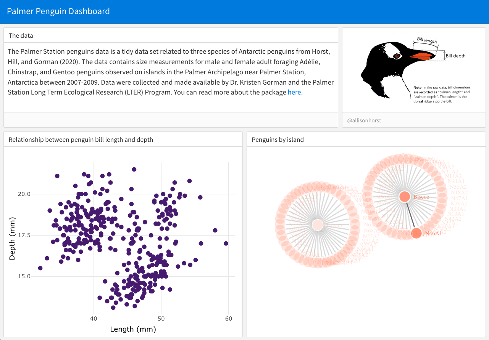

3 Static interaction
So far, our dashboard doesn’t have any interactive content – we only have shapes and some text. What we want to do next is add in a figure so that we can work words interactivity. Our first focus will be on plots that can be interacted with using wrapper functions like plotly and 3D, but aren’t actually dynamic – meaning they don’t respond to the user yet.
For instance, you might want to just show off some graphs and let folks have a peek at the underlying data, but not actually change the shape or variables represented in the data. Here are some examples:
- https://testing-apps.shinyapps.io/flexdashboard-dygraphs/
- https://testing-apps.shinyapps.io/flexdashboard-highcharter/
We do this by adding in code chunks to our Rmd. Feel free to paste in all of this code to your Rmd document again, or paste only the new code chunk.
---
title: 'Palmer Penguin Dashboard'
output:
flexdashboard::flex_dashboard:
---
```{r, echo = F, warning = F, message = F}
library(tidyverse)
library(palmerpenguins)
library(plotly)
```
## Column {.sidebar}
## Column
### Relationship between penguin bill length and depth
```{r}
ggplot(penguins, aes(x = bill_length_mm, y = bill_depth_mm)) +
geom_point(size = 2, color = "#51127C") +
theme_minimal() +
labs(x = "Length (mm)", y = "Depth (mm)")
```So now we have a plot embedded in our dashboard. But we can’t do anything with it yet. The first entry point to making this interactive to use wrapper functions. For instance, you may have played with the plotly package before. We can wrap the function ggplotly around our ggplot to convert the static ggplot to an intractive one, where we can explore the values behind each data point.
```{r}
ggplotly(ggplot(penguins, aes(x = bill_length_mm, y = bill_depth_mm)) +
geom_point(size = 2, color = "#51127C") +
theme_minimal() +
labs(x = "Length (mm)", y = "Depth (mm)"))
```Further, plotly has lots of capacities, so just a teaser is that we can play around with the tooltip argument in ggplotly to adjust what users see.
```{r}
ggplotly(ggplot(penguins, aes(x = bill_length_mm, y = bill_depth_mm)) +
geom_point(size = 2, color = "#51127C") +
theme_minimal() +
labs(x = "Length (mm)", y = "Depth (mm)"),
tooltip = c("x"))
```There are other interactive packages like plotly, namely leaflet for maps and networkD3 for networks.
### Penguins by island
```{r}
penguins %>%
cbind(select(penguins_raw, `Individual ID`)) %>%
filter(year == 2007) %>%
select(`Individual ID`, island, species) %>%
networkD3::simpleNetwork(
charge = -5,
fontSize = 8,
fontFamily = "Times",
linkColour = "#666",
nodeColour = "#51127C",
opacity = 0.9,
zoom = T
)
```Now, what we’ve done so far is cool – using just flexdashboard and something like plotly or you can build this out and make pretty cool semi-static pages.

Reveal source code
---
title: 'Palmer Penguin Dashboard'
output:
flexdashboard::flex_dashboard:
orientation: rows
---
```{r, echo = F, warning = F, message = F}
library(tidyverse)
library(palmerpenguins)
library(plotly)
```
## Row {data-height=300}
### The data {data-width=700}
The Palmer Station penguins data is a tidy data set related to three species of Antarctic penguins from Horst, Hill, and Gorman (2020). The data contains size measurements for male and female adult foraging Adélie, Chinstrap, and Gentoo penguins observed on islands in the Palmer Archipelago near Palmer Station, Antarctica between 2007-2009. Data were collected and made available by Dr. Kristen Gorman and the Palmer Station Long Term Ecological Research (LTER) Program. You can read more about the package [here](https://allisonhorst.github.io/palmerpenguins/index.html).
### {data-width=300}
```{r, fig.cap="@allisonhorst"}
knitr::include_graphics("https://raw.githubusercontent.com/allisonhorst/palmerpenguins/main/man/figures/culmen_depth.png")
```
## Row {data-height=700}
### Relationship between penguin bill length and depth
```{r}
ggplotly(ggplot(penguins, aes(x = bill_length_mm, y = bill_depth_mm)) +
geom_point(size = 2, color = "#51127C") +
theme_minimal() +
labs(x = "Length (mm)", y = "Depth (mm)"))
```
### Penguins by island
```{r}
ColourScale <- 'd3.scaleOrdinal()
.domain(["", "tigers"])
.range(["#FF6900", "#694489"]);'
penguins %>%
cbind(select(penguins_raw, `Individual ID`)) %>%
filter(year == 2007) %>%
select(`Individual ID`, island, species) %>%
networkD3::simpleNetwork(
charge = -5,
fontSize = 8,
fontFamily = "Times",
linkColour = "#666",
nodeColour = "#FB8861",
opacity = 0.9,
zoom = T
)
```But, we haven’t really gotten into the dynamic user-interfacing with data that is makes this more useful. And because of this, note that we haven’t even gotten into the world of Shiny yet! So, that’s what’s next…